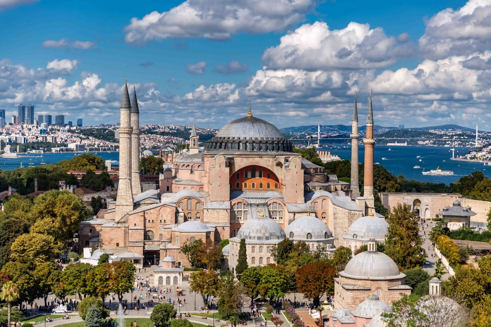

Yazar:Ahmet Selim Karatay
Uğruna şiirler yazılan, efsaneler söylenen, kuşatmalar altında kalan, bir devrin açılıp diğer devrin kapanmasına vesile olan, birçok ülkeden büyük olan, iki kıtayı birbirine bağlayan... Hakkında bu ve benzeri bir sürü şeyler yazılabilecek ve söylenebilecek İstanbul... Bugün sizler için İstanbul'da mutlaka görülmesi gereken 7 yeri listeliyoruz.Hazırsanız gelin başlayalım:
1)Ayasofya Cami

Listemizin başında yer alan Ayasofya Camii listemizin ikinci sırasında yer alan Sultanahmet Camii'nin karşısında aynı zamanda Sultanahmet Meydan'ında bulunur.Daha öncesinde iki kez çeşitli sebeplerle yıkılmış, günümüz Ayasofya'sı Justinianos tarafından yaptırılmıştır.916 yıl kilise olarak kalan yapı İstanbul'un fethiyle camiiye döndürülmüş
1934 yılına kadar camii olarak kalmış.84 yıl müze kaldıktan sonra 2020 yılında tekrar camii statüsü kazanmıştır.
2)Sultanahmet Camii
Listemizin ikinci sırasında yer alan Sultanahmet Camii Sultan I. Ahmet tarafından 17'nci yüzyılda, Mimar Sinan'ın yetiştirdiği öğrencilerden biri olan Sedefkar Mehmet Ağa'ya yaptırılmıştır. Camii duvarlarında yoğun bir şekilde mavi renkli İznik çinisi bulundurduğu için Mavi Camii(Blue Mosque) olarak bilinir.
3)Sultanahmet Meydanı
Gelelim Ayasofya ve Sultanahmet Camiilerinin bulundu Sultanahmet Meydanı'na:
"Hipodrom" ya da "At Meydanı" olarak da bilinir.
Meydanın ortasında Örme Dikilitaş, Yılanlı Sütun, Theodosius Dikilitaşı ve Alman Çeşmesi gibi yapılar bulunur. Ayrıca Sultanahmet ve Ayasofya Camii de bu meydanda yer alır.
3)Galata Kulesi
Listemizin üçüncü sırasında yer alan Galata Kulesi ilk olarak Justinianos tarafından inşa ettirilse de günümüzdeki halini Cenevizliler tarafından 1349'da yeniden inşa edilmesiyle alır.Yangın kulesi olarak da kullanılan kule çeşitli resterasyon işlsminden geçmiştir.Kule en son 2020'de restore olmuştur.
4)Topkapı Sarayı
İstanbul fatihi Sultan II. Mehmed tarafından 1460-1478 tarihleri arasında yaptırılmış olan ve zaman içerisinde bazı ilavelerin yapıldığı sarayda, Osmanlı padişahları ve Saray halkı 19'uncu yüzyıl ortalarına kadar ikamet etmiştir.
Topkapı Sarayı’nın olağanüstü zenginlikteki koleksiyonları ve son derece ilgi çekici hikâyelerle örülü tarihi bu sarayı dünyanın en görülmeye değer saraylarından biri kılarak listemizde yerini alır. İmparatorluk Hazinesi, Avrupa Porselenleri ve Camları, Bakır ve Tombak Mutfak Eşyası, Çin ve Japon Porselenleri, Gümüşler, Hırka-i Saadet Dairesi ve Kutsal Emanetler, İstanbul Cam ve Porselenleri, Padişah Elbiseleri, Padişah portreleri ve resim koleksiyonu, Silahlar müzede sergilenen değerli koleksiyonlar arasındadır.
5)Yerebatan Sarnıcı
Ayasofya'nın güneybatısında, Soğukçeşme Sokağı'ndadır. Suyun içinden yükselen pek çok mermer sütun nedeniyle halk arasında Yerebatan Sarayı olarak isimlendirilmektedir. Sarnıcın üzerinde daha önce bir bazilika bulunmasından ötürü, Bazilika Sarnıcı olarak da adlandırılır.
Bizans imparatoru I. Justinianus tarafından yaptırılan sarnıç, şehrin birinci ve ikinci tepeleri arasındaki bölgelerin su ihtiyacını karşılayan Hadrianus su yollarına bağlanmıştı.İstanbul'da gidilip görülmesi gereken merkezlerden bir tanesidir.
5)Süleymaniye Camii
Mimar Sinan’ın kalfalık eseri olarak tanımladığı Süleymaniye Camisi, Osmanlı padişahı Kanuni Sultan Süleyman'ın emriyle 1551-1558 yılları arasında yapılmıştır. Süleymaniye Camisi, Klasik Osmanlı Mimarisi'nin en önemli örneklerinden birisidir. İkisi üç şerefeli, ikisi de iki şerefeli olmak üzere dört minareye sahip olan caminin kubbesi 53 metre yüksekliğindedir.
Mihrabın önündeki türbe, kendi parasıyla cami inşa ettiren Kanuni Sultan Süleyman'a, yanındaki türbe de eşi Hürrem Sultan'a aittir.
6)Kapalıçarşı ve Mısır Çarşısı
Kapalıçarşı, dünyanın ilk alışveriş merkezi olarak bilinir.Yaklaşık dört bin adet dükkanın bulunduğu Kapalıçarşı, dünyanın en eski ve en büyük çarşısı olma özelliğini taşıyor.
Mısır Çarşısı ise İstanbul’un en eski kapalı çarşılarından biridir.Aktarları ile meşhur olsa da çarşıda doğal ilaçlar, baharat, çiçek tohumları, nadir bitki kök ve kabukları gibi ürünlerin yanı sıra; kuruyemiş ve şarküteri ürünleri de satılıyor.
7)Ortaköy Cami
Neobarok tarzdaki minareleri ve ihtişamlı görünümü ile Ortaköy Cami, İstanbul’a gelen herkesin görmesi gereken bir güzellik. Vapurla Beşiktaş’a doğru giderken tüm güzelliği ile insanın gözüne çarpan Ortaköy Cami, Büyük Mecidiye Cami olarak da biliniyor. Boğaz’ın kenarına inşa edilmiş olan cami Sultan Abdülmecit tarafından Ermeni asıllı Mimar Nigoğos Balyan’a yaptırılmış ve 1854 yılında açılmıştır.
Ayrıca:
•KIZ KULESİ
•Eyüp Sultan Camii
•Gülhane Parkı
•İstiklal Caddesi
•Miniatürk
görülmesi gereken yerler arasında yer alıyor.
En yakın zamanda bu güzel mekanlarla buluşmanız temennisiyle...